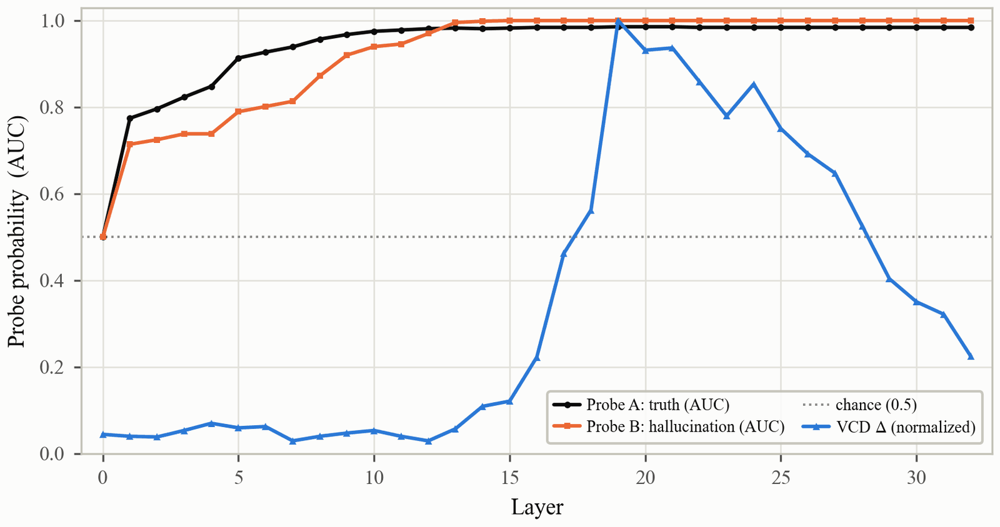
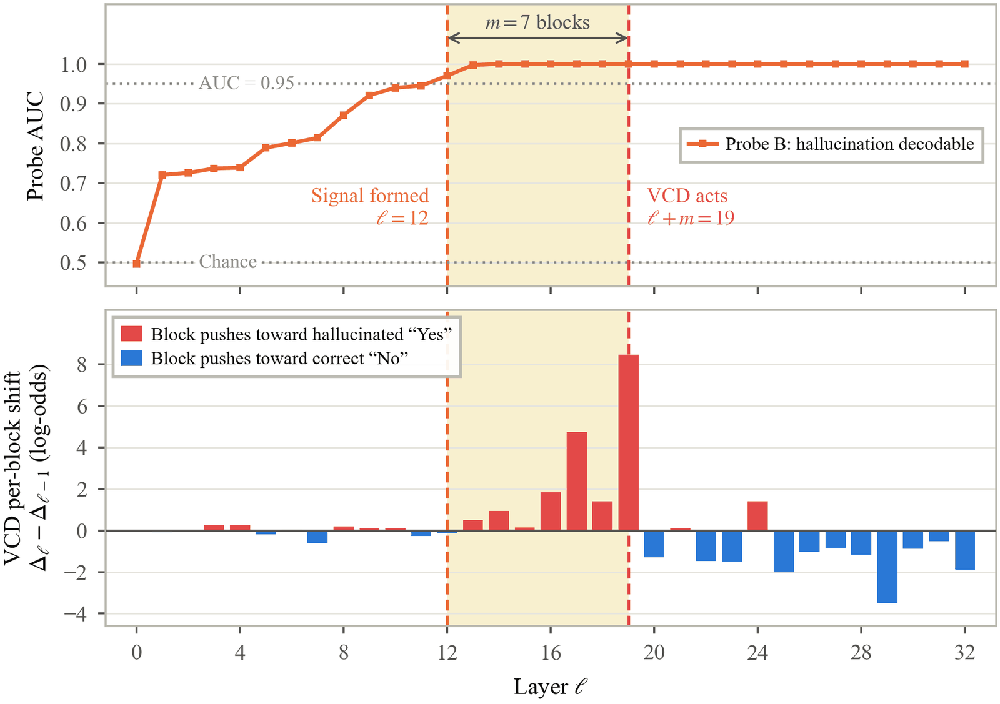
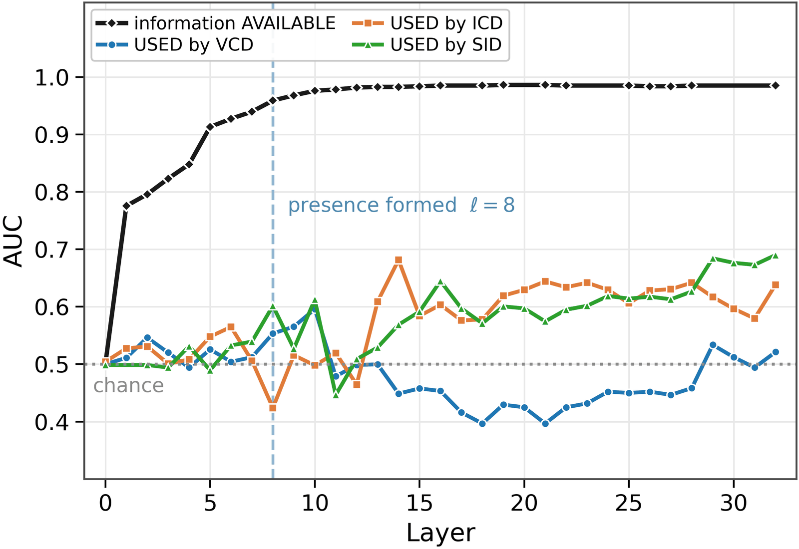
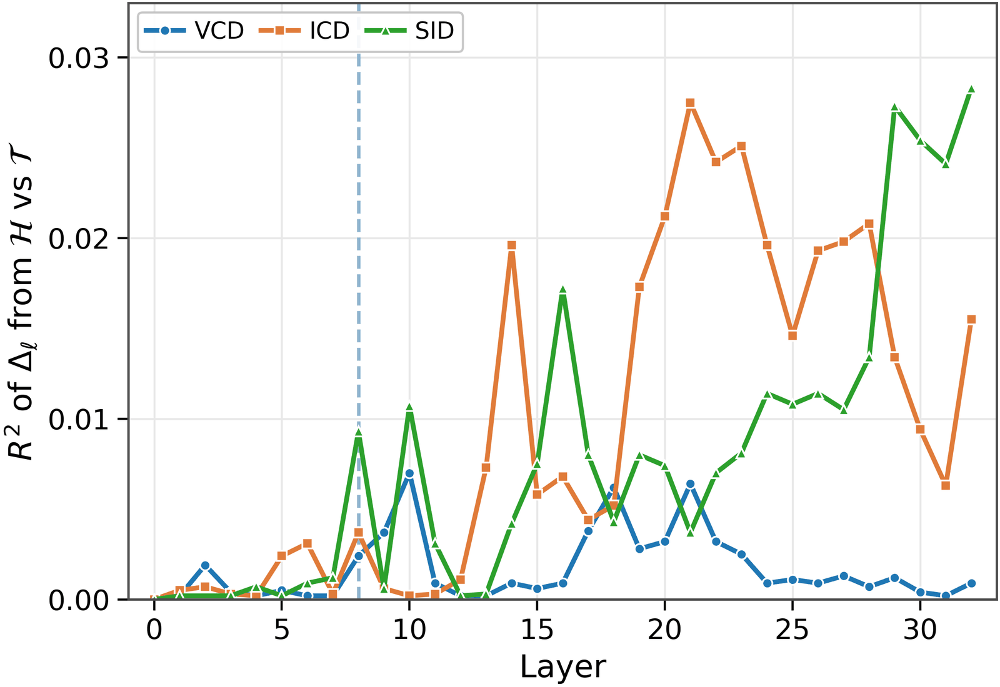
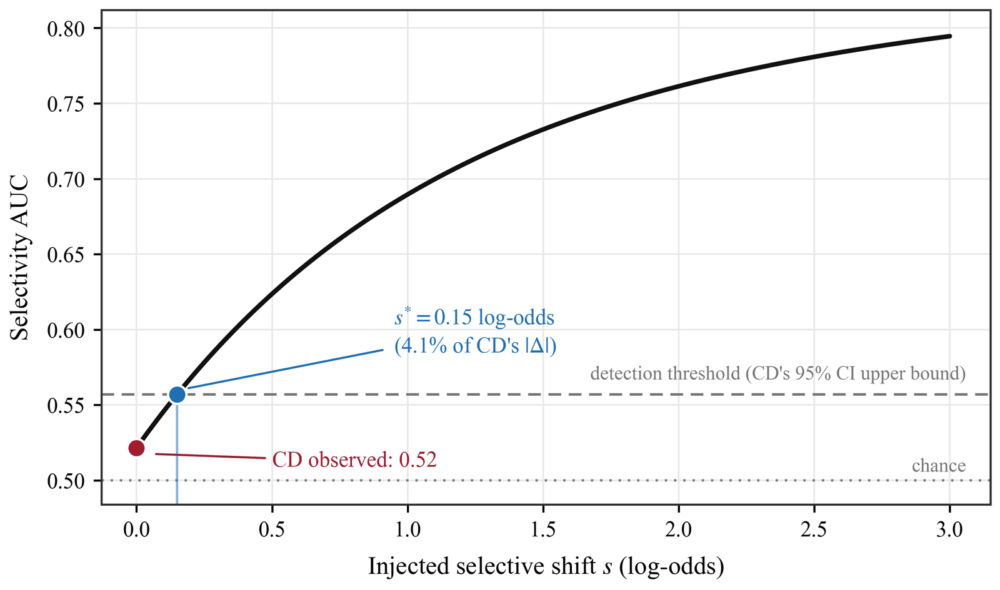
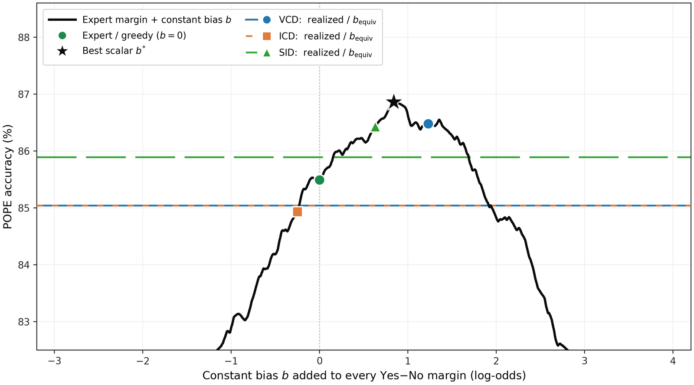
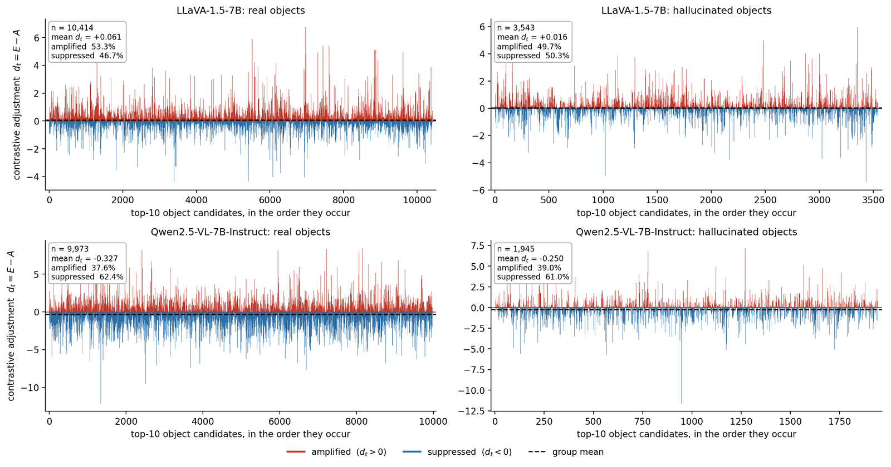

1Blind to hallucination
The contrastive shift ranks hallucinated “Yes” answers no better than chance (VCD: AUC 0.52) and pushes 96.5% of them further towards “Yes”. One constant bias beats every CD method on POPE.
Finding 1 →Multimodal large language models frequently describe objects that are not present in an image. Contrastive decoding has become a widely used inference-time remedy, and it is assumed to work by contrasting a normal forward pass against a hallucination-prone one so that hallucinated content is suppressed. However, whether the reported benchmark improvements actually arise from this mechanism has not been examined. Our key observation is that a correction which suppresses hallucination must depend on whether the model is hallucinating, and that this dependence can be measured directly inside the model. Following this idea, we analyse the internal computation of three contrastive decoding methods on both discriminative and generative tasks, and compare each against controls that remove the contrastive term while preserving its effect on the output. The correction turns out to be unrelated to hallucination at every layer, the gains in captioning come instead from a constraint that narrows sampling towards greedy decoding, and an unstructured perturbation of the same magnitude performs at least as well. Experiments across three models and standard hallucination benchmarks show that these improvements reflect a change in decoding behaviour rather than genuine hallucination mitigation.
At step \(t\), an MLLM scores each candidate token from the image \(v\), the prompt \(x\) and the tokens so far. Contrastive decoding runs the same model a second time on a perturbed input \((v^*, x^*)\) where the language prior should dominate, and subtracts:
\[ z_{\text{cd}}(y_t) = (1+\alpha)\,\underbrace{z_\theta(y_t \mid v, x, y_{<t})}_{E} \;-\; \alpha\,\underbrace{z_\theta(y_t \mid v^*, x^*, y_{<t})}_{A} \;\overset{\alpha=1}{=}\; E + d_t, \qquad d_t = E - A. \]We call \(d_t\) the contrastive adjustment. Tokens the amateur favours are pushed down, so if the amateur hallucinates, hallucinated tokens should lose. The methods we study differ only in how the amateur is built:
| Method | Amateur input | What it corrupts |
|---|---|---|
| VCD Leng et al. | image with forward-diffusion noise (step 500) | visual evidence |
| ICD Wang et al. | misleading role instruction prepended to the prompt | instruction only; image kept |
| SID Huo et al. | only the least-informative visual tokens, picked by early-layer attention | visual tokens inside the forward pass |
All three are paired with the adaptive plausibility constraint (APC), which keeps only tokens the expert itself finds likely, so the subtraction cannot promote implausible ones:
\[ \mathcal{V}_{\text{head}} = \Big\{\, w : p_\theta(w \mid v, x, y_{<t}) \;\ge\; \beta \max_{w'} p_\theta(w' \mid v, x, y_{<t}) \,\Big\}. \]Our question: when these methods score better on hallucination benchmarks, is it because \(d_t\) suppresses hallucinated content?
Finding 1 · POPE, logit lens
On a Yes/No question, contrastive decoding adds one number to the model’s answer. We read that answer at every layer with the logit lens, as the margin \(m_\ell = z^{\text{Yes}}_\ell - z^{\text{No}}_\ell\), on both the expert and the amateur pass. Their difference \(\Delta_\ell = m^E_\ell - m^A_\ell\) is exactly what CD adds.
Among questions the model answers “Yes”, a real correction has to push hallucinations \(\mathcal{H}\) (object absent) away from “Yes” and leave correct answers \(\mathcal{T}\) (object present) alone. Setup: LLaVA-v1.5-7B, 9,000 POPE-COCO questions, 257–261 hallucinations against 3,453 correct positives.


The depth gap alone isn’t decisive, because a shift written at layer 19 still reaches the output. The direct test is whether \(\Delta_\ell\) separates \(\mathcal{H}\) from \(\mathcal{T}\) at any depth. It does not:


Selectivity of the contrastive shift at the output layer (paper Table 1). Selectivity AUC: how often a hallucination is pushed away from “Yes” more than a correct answer (0.5 = chance). Shifts in log-odds; positive means towards “Yes”.
| Method | Selectivity | Mean shift Δ | Amateur presence AUC | % of \(\mathcal{H}\) pushed towards “Yes” | ||
|---|---|---|---|---|---|---|
| AUC | 95% CI | on \(\mathcal{H}\) | on \(\mathcal{T}\) | |||
| VCD | 0.523 | [0.49, 0.55] | +3.32 | +3.60 | 0.777 | 96.5% |
| ICD | 0.639 | [0.60, 0.67] | −0.17 | −0.06 | 0.940 | 25.7% |
| SID | 0.691 | [0.66, 0.72] | +1.61 | +3.11 | 0.799 | 79.7% |
VCD’s confidence interval includes chance. SID ranks the two groups above chance only because it pushes correct answers towards “Yes” even harder (+3.11 vs +1.61). ICD is the only method with a negative shift on hallucinations (−0.17), but it differs from correct answers by 0.11 log-odds, against a median expert margin of 3.16: too small to flip an answer.
The reason is visible in the amateur column. Every amateur still encodes whether the object is present (AUC 0.78–0.94; ICD’s matches the expert because it never touches the image). The presence signal sits on both sides of the subtraction and cancels.
Two controls say no. An oracle shift that is selective by construction scores AUC 0.885–0.889 through the same computation, and each method’s shift is 9–24× larger than the smallest selective effect the test can detect. And replacing \(\Delta\) with a single constant added to every one of the 9,000 questions reaches 86.86% POPE accuracy, above greedy decoding (85.49%) and every CD method.


Scalar-bias sweep, POPE-COCO accuracy in % (paper Table 8). “Own mean” replaces each method’s per-question shift with its average, applied to every question.
| Method | Greedy | CD | Own mean as a constant | Best constant (b* = +0.84) | Yes-rate: expert → CD |
|---|---|---|---|---|---|
| VCD | 85.49 | 85.04 | 86.48 | 86.86 | 41.2 → 48.2 |
| ICD | 85.47 | 85.04 | 84.93 | 86.89 | 41.3 → 40.0 |
| SID | 85.47 | 85.89 | 86.43 | 86.89 | 41.3 → 44.3 |
CD shifts the Yes/No decision threshold by an amount set by how the amateur is built, not by whether the object is there. A larger α only magnifies a shift that already points the wrong way on 96.5% of VCD’s hallucinations.
Finding 2 · LLaVA-Bench, CHAIR
APC keeps only tokens with expert probability at least β times the top one. As β grows, fewer candidates survive, and sampling starts to look like greedy decoding. To isolate this, we sample under APC with no contrastive term at all (APC-S) and measure how close its answers are to greedy decoding and to plain sampling: Jaccard similarity over sub-word tokens, averaged over the 60 LLaVA-Bench (In-the-Wild) questions.
Jaccard similarity of APC-S answers to greedy answers and to plain-sampling answers. Drag the slider or hover a chart.
The trend survives stricter definitions of overlap, an order-sensitive bigram version and a content-words-only version (paper Appendix D.3). At VCD’s default β = 0.1, APC-S is already closer to greedy than to sampling on every model.
If APC is what helps, greedy decoding should do at least as well as CD. On CHAIR (500 MS COCO images, prompt “Describe this image in detail.”, lower is better), it does better on every model, and APC-S without any contrast gets most of the way there.
Lower is better. The vertical line marks greedy decoding.
LLaVA-Bench (In-the-Wild) relative score, higher is better (paper Table 2). Greedy decoding scores best on all three models.
| Condition | LLaVA-v1.5-7B | Qwen2.5-VL-7B-Instruct | InternVL3-8B |
|---|---|---|---|
| Sampling | 56.1 | 73.9 | 76.3 |
| APC-S (β = 0.1) | 56.7 | 80.6 | 77.1 |
| Greedy | 62.1 | 83.6 | 79.3 |
Raising β moves the output closer to greedy and improves both CHAIR metrics. The reported benefit of CD tracks this shift, not the contrast.
Finding 3 · CHAIR
If CD suppresses hallucinations, the adjustment \(d_t = E - A\) should push hallucinated object tokens down and real ones up. During CHAIR captioning we read \(d_t\) for every object word among the top-10 candidates at each step, and label it real or hallucinated against the image’s COCO annotations.
Share of tokens with \(d_t > 0\). A selective method would put red dots left of 50% and gray dots right of it.
For the tokens the model actually emits, hallucinated objects are amplified more often than suppressed by every method on every model. Across all top-10 candidates, real and hallucinated tokens move the same way in 7 of 9 model–method pairs. Plotted step by step, \(d_t\) looks like noise:

So we replaced it with noise. The second forward pass is dropped and \(d_t\) is drawn from \(\mathcal{N}(\mu, \sigma^2)\) matched to each method’s statistics, independently at each step, truncated to the observed range, with APC unchanged. No image information goes into it.
CHAIR on LLaVA-v1.5-7B, lower is better (paper Table 5). Each method next to Gaussian noise matched to its \(d_t\) statistics; three seeds.
| Adjustment | CHAIR-S ↓ | CHAIR-I ↓ |
|---|---|---|
| VCD (β = 0.1) | 57.2 | 17.4 |
| Noise \(\mathcal{N}(0.026,\, 0.380^2)\) | 51.4 | 14.1 |
| SID (β = 0.1) | 51.8 | 15.0 |
| Noise \(\mathcal{N}(0.088,\, 0.851^2)\) | 51.5 | 15.0 |
Structureless noise does as well as the real adjustment or better, so whatever CD improves on CHAIR doesn’t depend on what the amateur pass saw.
The gains contrastive decoding reports on standard hallucination benchmarks are a change in decoding behaviour, not hallucination mitigation. Its shift carries no information about whether an answer is a hallucination, at any layer, including the layers where the model already knows the object is absent.
Before crediting an inference-time method with reducing hallucination, compare it against controls that keep its effect on the output and remove its mechanism:
The mechanistic analysis covers one model (LLaVA-v1.5-7B) on one discriminative benchmark, because the logit lens needs per-layer states for both passes of every question. Whether the same holds in larger models or inside free-form generation is open. CHAIR only recognises the 80 COCO categories, and LLaVA-Bench scores come from a single LLM judge. Both bound the absolute numbers, not the comparisons, since every condition is scored the same way.
Everything runs on a single 24 GB GPU; all paper results were produced on one NVIDIA L4. Each experiment folder in the repository is self-contained, with its own README and setup steps.
git clone https://github.com/Aurnawr/Rethinking-CD.git
cd Rethinking-CD| Experiment | Folder |
|---|---|
| Logit lens, presence probes, oracle and scalar-bias controls (Finding 1) | mech_interp/ |
| APC-S vs. greedy and sampling, Jaccard sweep over β (Finding 2) | jaccard_experiment/ |
| CHAIR scores for sampling, CD, APC-S and greedy (Finding 2) | CHAIR_analysis/ |
| Contrastive adjustment on object tokens, Gaussian proxy (Finding 3) | CHAIR_analysis/contrastive_adjustment/ |
| InternVL3-8B ports of the experiments above | intern/ |
@inproceedings{rethinkingcd2026,
title = {Rethinking the Effectiveness of Contrastive Decoding in Mitigating Hallucinations in {MLLMs}},
author = {Bendre, Arnav and Gupta, Guneesh and Modi, Shreyansh and Grover, Kavish and Aggarwal, Chayan},
booktitle = {NeurIPS 2026 Workshop on VLM4RWD},
year = {2026}
}